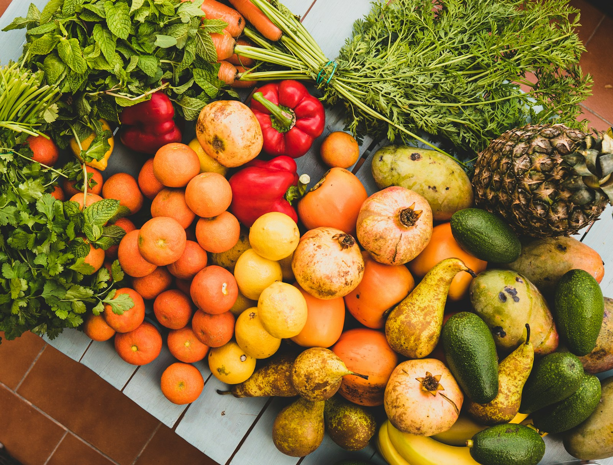
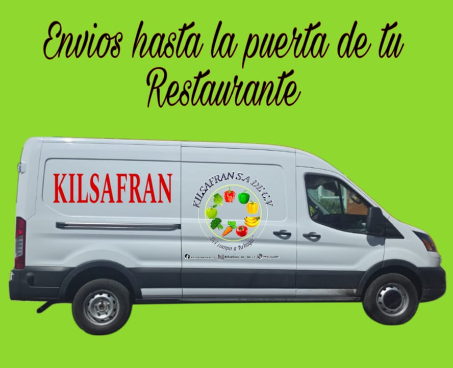
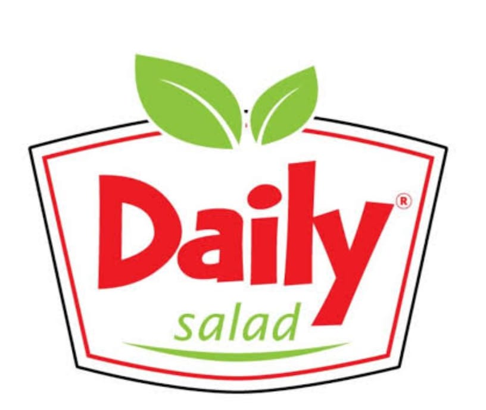
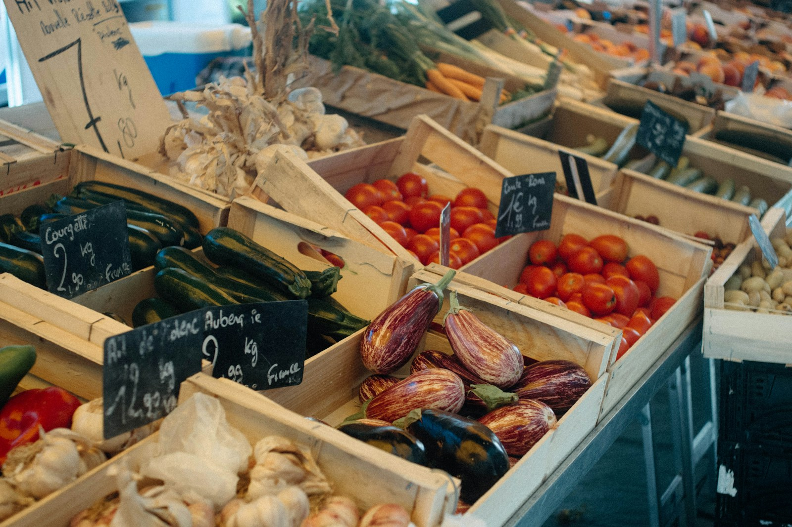
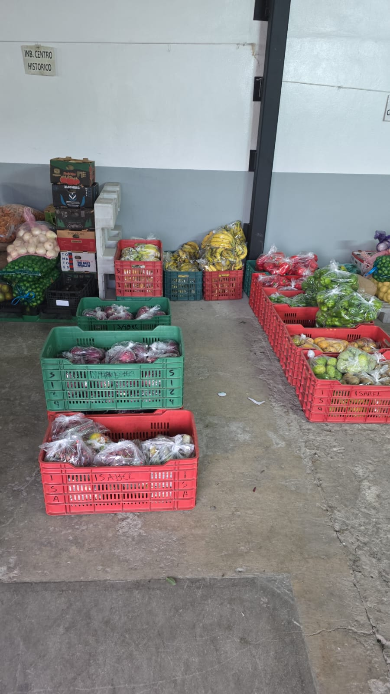
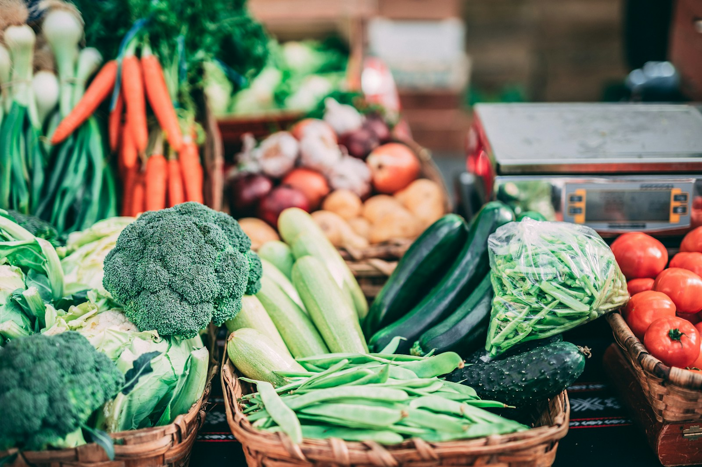
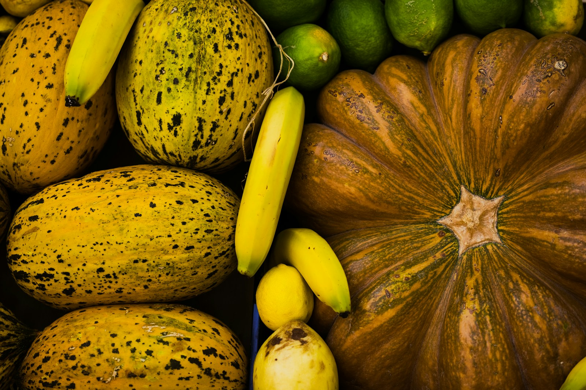
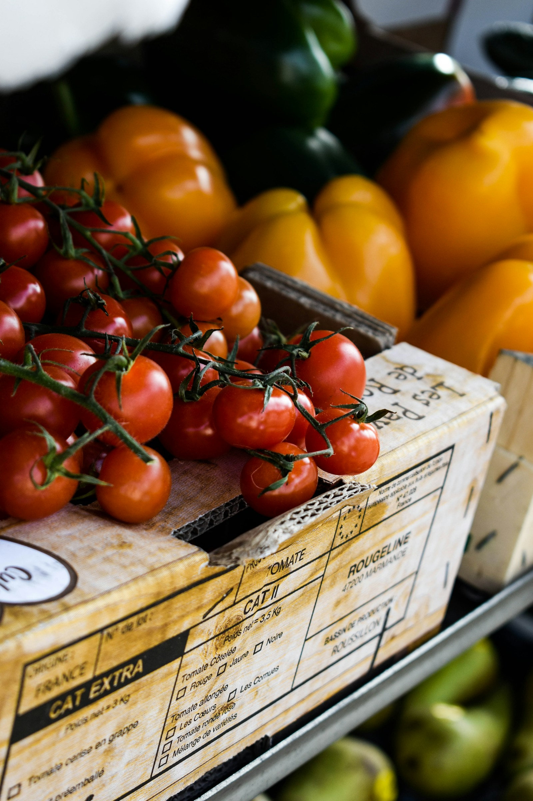

Entrega hasta la puerta de tu restaurante
Llevamos tu pedido directo a tu negocio para que tú te dediques a lo que mejor sabes: cocinar.
- Reparto en CDMX y zona metropolitana
- Pedido empacado y listo para recibir
Kilsafran
0Del campo a tu hogar
Surtimos restaurantes y negocios con producto fresco, bien empacado y entregado en nuestra camioneta. Dinos qué necesitas y lo llevamos.

Lo que hacemos
Tú nos dices qué necesitas; nosotros seleccionamos, empacamos y te lo llevamos.
Llevamos tu pedido directo a tu negocio para que tú te dediques a lo que mejor sabes: cocinar.
Jitomate, pimientos, brócoli, zanahoria, lechuga y todo lo que tu cocina usa a diario.
Quiero pedir estoPlátano, manzana, cítricos y más, seleccionados para que lleguen en su punto.
Quiero pedir estoDinos cantidades y variedad; armamos tu pedido según lo que necesita tu cocina.
Quiero pedir estoEscríbenos, confirma tu pedido y listo. Sin formularios largos ni vueltas.
Quiero pedir esto
Quiénes somos
Somos Kilsafran, una empresa dedicada a la entrega de frutas y verduras. Surtimos a restaurantes y negocios con producto fresco y bien empacado.
Nos encargamos de seleccionar, empacar y llevar tu pedido hasta la puerta, para que tu cocina nunca se quede sin lo esencial.
Cargamos la camioneta con cajas de fruta y verdura y salimos a entregar. Tú nos escribes lo que necesitas; nosotros lo llevamos hasta tu negocio.
Quiero que me lo llevenCómo trabajamos
Cuéntanos por WhatsApp qué frutas y verduras necesitas y en qué cantidad.
Seleccionamos y empacamos todo en cajas, listo para salir.
Cargamos la camioneta y llevamos tu pedido en ruta.
Tu pedido llega hasta tu restaurante o negocio.
De la caja a tu cocina: producto seleccionado para que lo uses el mismo día que llega.
Restaurantes y marcas que confían en Kilsafran para surtir su cocina.

Daily SaladEn acción





Dudas frecuentes
Atendemos la Ciudad de México y su área metropolitana. Escríbenos tu colonia por WhatsApp y te confirmamos la entrega.
Por WhatsApp: dinos qué frutas y verduras necesitas y en qué cantidad, y te confirmamos tu pedido.
Sí, llevamos tu pedido hasta la puerta de tu restaurante o negocio.
Jitomate, pimientos, brócoli, zanahoria, lechuga, plátano, manzana, limón y más. Pregúntanos por lo que necesites y te decimos qué hay disponible.
Claro. Armamos el pedido según lo que consume tu cocina.
Escríbenos hoy y arma tu pedido por WhatsApp.
Hablemos
Déjanos tus datos y abrimos WhatsApp con tu mensaje listo. Atendemos CDMX y zona metropolitana.